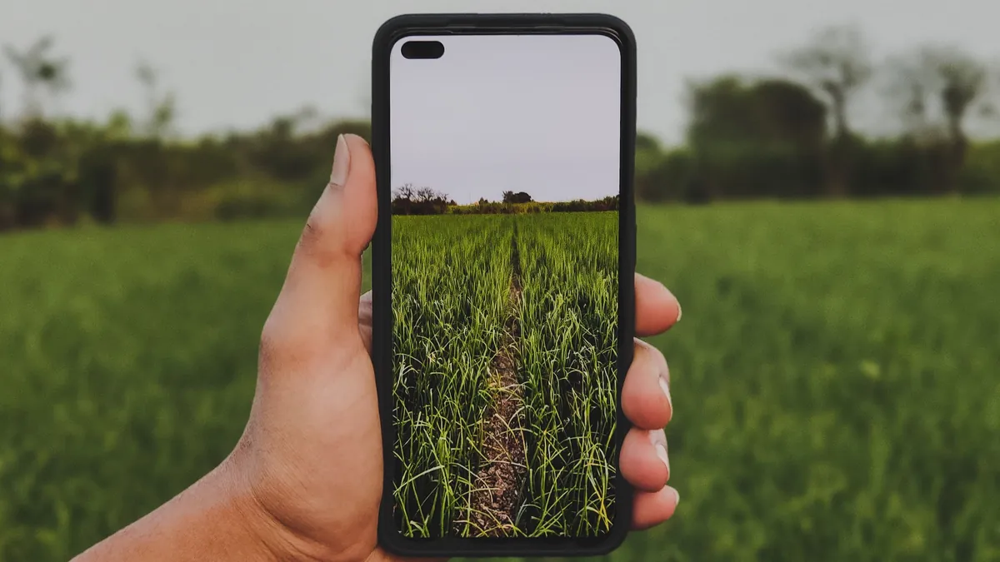
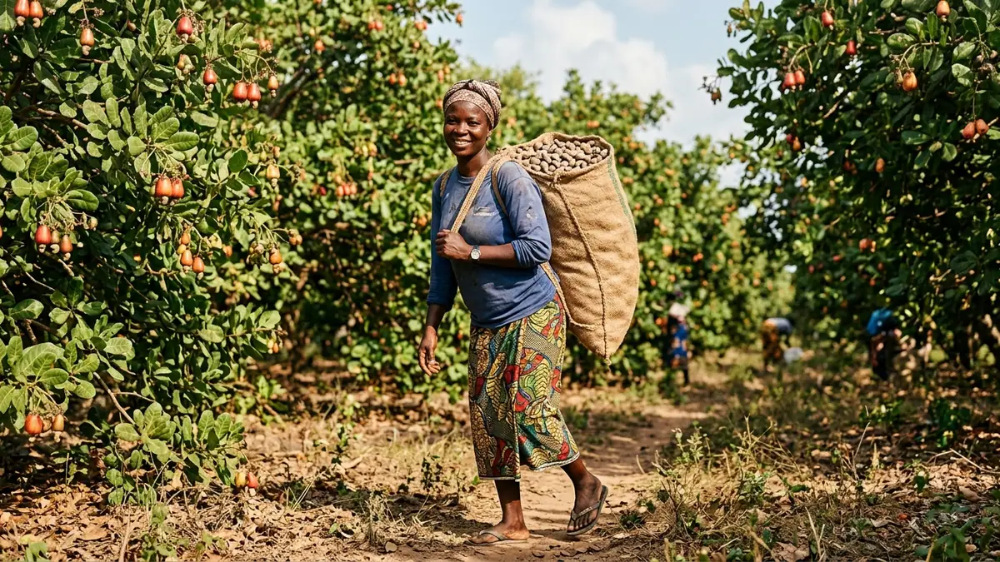
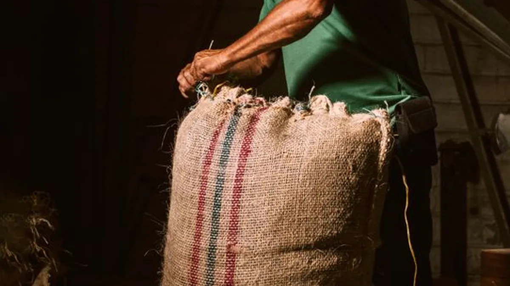

Où voulez-vous travailler ?
Choisissez un domaine métier. Chaque image représente le travail réel derrière le module, tout en gardant une seule expérience ANAGROCI Operations.

MA JOURNÉE
Alertes de votre périmètre, opérations restées sur le téléphone, missions et raccourcis selon votre rôle.
Ouvrir l’espace
RÉSEAU
Clusters, villages, RT, producteurs, Farmer Passport et coopératives.
Ouvrir l’espace
TERRAIN
Mobilisation, visites, formations, durabilité et preuves terrain géolocalisées.
Ouvrir l’espace
ACHATS & COMPTES RT
Achat bord champ, validation, financements et caisse, sacherie et bilan hebdomadaire du RT.
Ouvrir l’espace
EXPÉDITION
Lots et départs des villages jusqu’à la remise des noix au transporteur.
Ouvrir l’espace
PILOTAGE & ADMINISTRATION
Tableau de bord, alertes, rapports et exports, campagnes, utilisateurs et traçabilité.
Ouvrir l’espaceAFLP FLEET
Parc de motos AFLP : remises, missions, compteurs, carburant, entretiens.
Ouvrir →
AFLP FIELD PROOF
Preuves photo et vidéo des missions : géolocalisées, horodatées, hors ligne.
Ouvrir →